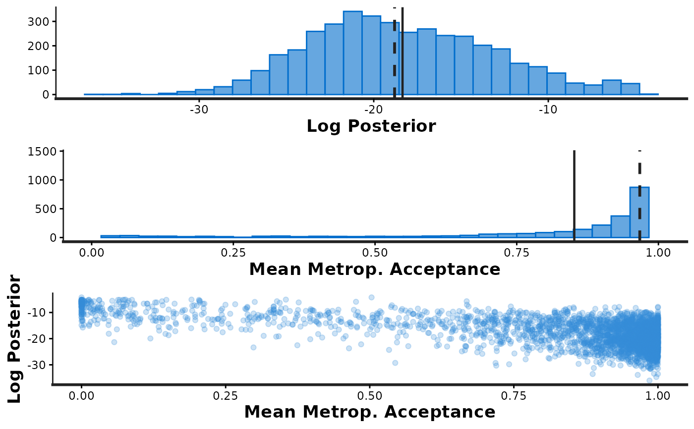
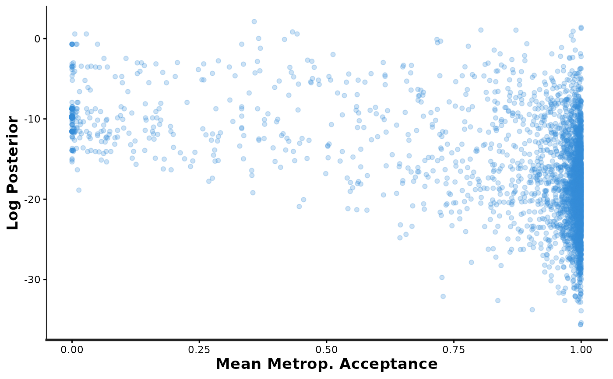
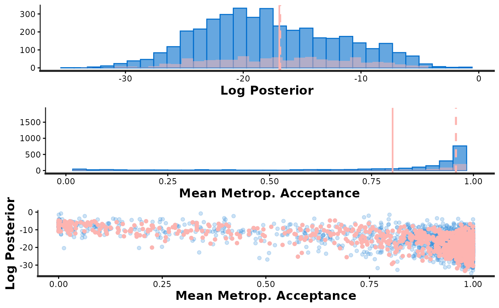
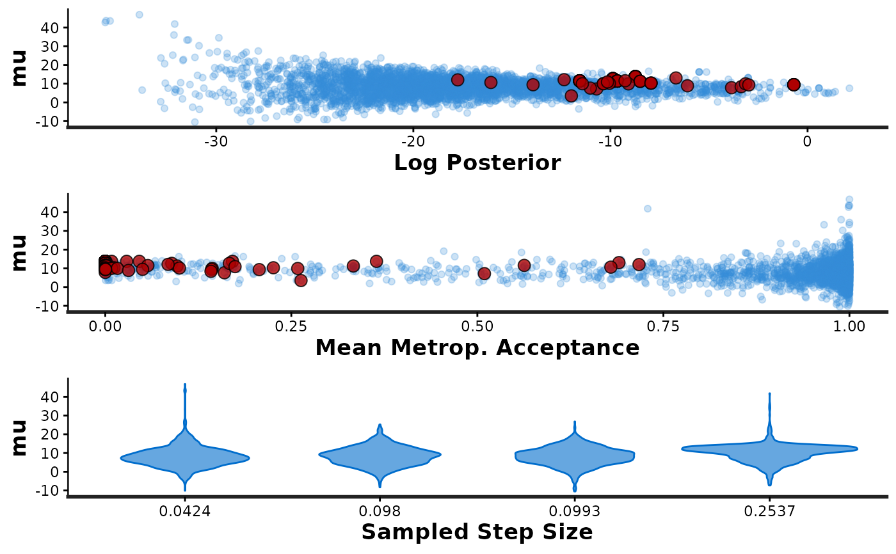

RStan Diagnostic plots
stan_plot_diagnostics.RdDiagnostic plots for HMC and NUTS using ggplot2.
Usage
stan_diag(object,
information = c("sample","stepsize", "treedepth","divergence"),
chain = 0, ...)
stan_par(object, par, chain = 0, ...)
stan_rhat(object, pars, ...)
stan_ess(object, pars, ...)
stan_mcse(object, pars, ...)Arguments
- object
A stanfit or stanreg object.
- information
The information to be contained in the diagnostic plot.
- par,pars
The name of a single scalar parameter (
par) or one or more parameter names (pars).- chain
If
chain=0(the default) all chains are combined. Otherwise the plot forchainis overlaid on the plot for all chains combined.- ...
For
stan_diagandstan_par, optional arguments toarrangeGrob. Forstan_rhat,stan_ess, andstan_mcse, optional arguments tostat_binin the ggplot2 package.
Value
For stan_diag and stan_par, a list containing the ggplot objects for
each of the displayed plots. For stan_rhat, stan_ess,
and stan_mcse, a single ggplot object.
Details
stan_rhat,stan_ess,stan_mcseRespectively, these plots show the distribution of the Rhat statistic, the ratio of effective sample size to total sample size, and the ratio of Monte Carlo standard error to posterior standard deviation for the estimated parameters. These plots are not intended to identify individual parameters, but rather to allow for quickly identifying if the estimated values of these quantities are desireable for all parameters.
stan_parCalling
stan_pargenerates three plots: (i) a scatterplot ofparvs. the accumulated log-posterior (lp__), (ii) a scatterplot ofparvs. the average Metropolis acceptance rate (accept_stat), and (iii) a violin plot showing the distribution ofparat each of the sampled step sizes (one per chain). For the scatterplots, red points are superimposed to indicate which (if any) iterations encountered a divergent transition. Yellow points indicate a transition that hit the maximum treedepth rather than terminated its evolution normally.stan_diagThe
informationargument is used to specify which plotsstan_diagshould generate:information='sample'Histograms oflp__andaccept_stat, as well as a scatterplot showing their joint distribution.information='stepsize'Violin plots showing the distributions oflp__andaccept_statat each of the sampled step sizes (one per chain).information='treedepth'Histogram oftreedepthand violin plots showing the distributions oflp__andaccept_statfor each value oftreedepth.information='divergence'Violin plots showing the distributions oflp__andaccept_statfor iterations that encountered divergent transitions (divergent=1) and those that did not (divergent=0).
Note
For details about the individual diagnostics and sampler parameters and their interpretations see the Stan Modeling Language User's Guide and Reference Manual at https://mc-stan.org/documentation/.
Examples
# \dontrun{
fit <- stan_demo("eight_schools")
#>
#> > J <- 8
#>
#> > y <- c(28, 8, -3, 7, -1, 1, 18, 12)
#>
#> > sigma <- c(15, 10, 16, 11, 9, 11, 10, 18)
#>
#> > tau <- 25
#>
#> SAMPLING FOR MODEL 'eight_schools' NOW (CHAIN 1).
#> Chain 1:
#> Chain 1: Gradient evaluation took 5e-06 seconds
#> Chain 1: 1000 transitions using 10 leapfrog steps per transition would take 0.05 seconds.
#> Chain 1: Adjust your expectations accordingly!
#> Chain 1:
#> Chain 1:
#> Chain 1: Iteration: 1 / 2000 [ 0%] (Warmup)
#> Chain 1: Iteration: 200 / 2000 [ 10%] (Warmup)
#> Chain 1: Iteration: 400 / 2000 [ 20%] (Warmup)
#> Chain 1: Iteration: 600 / 2000 [ 30%] (Warmup)
#> Chain 1: Iteration: 800 / 2000 [ 40%] (Warmup)
#> Chain 1: Iteration: 1000 / 2000 [ 50%] (Warmup)
#> Chain 1: Iteration: 1001 / 2000 [ 50%] (Sampling)
#> Chain 1: Iteration: 1200 / 2000 [ 60%] (Sampling)
#> Chain 1: Iteration: 1400 / 2000 [ 70%] (Sampling)
#> Chain 1: Iteration: 1600 / 2000 [ 80%] (Sampling)
#> Chain 1: Iteration: 1800 / 2000 [ 90%] (Sampling)
#> Chain 1: Iteration: 2000 / 2000 [100%] (Sampling)
#> Chain 1:
#> Chain 1: Elapsed Time: 0.047 seconds (Warm-up)
#> Chain 1: 0.026 seconds (Sampling)
#> Chain 1: 0.073 seconds (Total)
#> Chain 1:
#>
#> SAMPLING FOR MODEL 'eight_schools' NOW (CHAIN 2).
#> Chain 2:
#> Chain 2: Gradient evaluation took 3e-06 seconds
#> Chain 2: 1000 transitions using 10 leapfrog steps per transition would take 0.03 seconds.
#> Chain 2: Adjust your expectations accordingly!
#> Chain 2:
#> Chain 2:
#> Chain 2: Iteration: 1 / 2000 [ 0%] (Warmup)
#> Chain 2: Iteration: 200 / 2000 [ 10%] (Warmup)
#> Chain 2: Iteration: 400 / 2000 [ 20%] (Warmup)
#> Chain 2: Iteration: 600 / 2000 [ 30%] (Warmup)
#> Chain 2: Iteration: 800 / 2000 [ 40%] (Warmup)
#> Chain 2: Iteration: 1000 / 2000 [ 50%] (Warmup)
#> Chain 2: Iteration: 1001 / 2000 [ 50%] (Sampling)
#> Chain 2: Iteration: 1200 / 2000 [ 60%] (Sampling)
#> Chain 2: Iteration: 1400 / 2000 [ 70%] (Sampling)
#> Chain 2: Iteration: 1600 / 2000 [ 80%] (Sampling)
#> Chain 2: Iteration: 1800 / 2000 [ 90%] (Sampling)
#> Chain 2: Iteration: 2000 / 2000 [100%] (Sampling)
#> Chain 2:
#> Chain 2: Elapsed Time: 0.037 seconds (Warm-up)
#> Chain 2: 0.022 seconds (Sampling)
#> Chain 2: 0.059 seconds (Total)
#> Chain 2:
#>
#> SAMPLING FOR MODEL 'eight_schools' NOW (CHAIN 3).
#> Chain 3:
#> Chain 3: Gradient evaluation took 2e-06 seconds
#> Chain 3: 1000 transitions using 10 leapfrog steps per transition would take 0.02 seconds.
#> Chain 3: Adjust your expectations accordingly!
#> Chain 3:
#> Chain 3:
#> Chain 3: Iteration: 1 / 2000 [ 0%] (Warmup)
#> Chain 3: Iteration: 200 / 2000 [ 10%] (Warmup)
#> Chain 3: Iteration: 400 / 2000 [ 20%] (Warmup)
#> Chain 3: Iteration: 600 / 2000 [ 30%] (Warmup)
#> Chain 3: Iteration: 800 / 2000 [ 40%] (Warmup)
#> Chain 3: Iteration: 1000 / 2000 [ 50%] (Warmup)
#> Chain 3: Iteration: 1001 / 2000 [ 50%] (Sampling)
#> Chain 3: Iteration: 1200 / 2000 [ 60%] (Sampling)
#> Chain 3: Iteration: 1400 / 2000 [ 70%] (Sampling)
#> Chain 3: Iteration: 1600 / 2000 [ 80%] (Sampling)
#> Chain 3: Iteration: 1800 / 2000 [ 90%] (Sampling)
#> Chain 3: Iteration: 2000 / 2000 [100%] (Sampling)
#> Chain 3:
#> Chain 3: Elapsed Time: 0.039 seconds (Warm-up)
#> Chain 3: 0.052 seconds (Sampling)
#> Chain 3: 0.091 seconds (Total)
#> Chain 3:
#>
#> SAMPLING FOR MODEL 'eight_schools' NOW (CHAIN 4).
#> Chain 4:
#> Chain 4: Gradient evaluation took 3e-06 seconds
#> Chain 4: 1000 transitions using 10 leapfrog steps per transition would take 0.03 seconds.
#> Chain 4: Adjust your expectations accordingly!
#> Chain 4:
#> Chain 4:
#> Chain 4: Iteration: 1 / 2000 [ 0%] (Warmup)
#> Chain 4: Iteration: 200 / 2000 [ 10%] (Warmup)
#> Chain 4: Iteration: 400 / 2000 [ 20%] (Warmup)
#> Chain 4: Iteration: 600 / 2000 [ 30%] (Warmup)
#> Chain 4: Iteration: 800 / 2000 [ 40%] (Warmup)
#> Chain 4: Iteration: 1000 / 2000 [ 50%] (Warmup)
#> Chain 4: Iteration: 1001 / 2000 [ 50%] (Sampling)
#> Chain 4: Iteration: 1200 / 2000 [ 60%] (Sampling)
#> Chain 4: Iteration: 1400 / 2000 [ 70%] (Sampling)
#> Chain 4: Iteration: 1600 / 2000 [ 80%] (Sampling)
#> Chain 4: Iteration: 1800 / 2000 [ 90%] (Sampling)
#> Chain 4: Iteration: 2000 / 2000 [100%] (Sampling)
#> Chain 4:
#> Chain 4: Elapsed Time: 0.045 seconds (Warm-up)
#> Chain 4: 0.036 seconds (Sampling)
#> Chain 4: 0.081 seconds (Total)
#> Chain 4:
#> Warning: There were 94 divergent transitions after warmup. See
#> https://mc-stan.org/misc/warnings.html#divergent-transitions-after-warmup
#> to find out why this is a problem and how to eliminate them.
#> Warning: Examine the pairs() plot to diagnose sampling problems
#> Warning: Bulk Effective Samples Size (ESS) is too low, indicating posterior means and medians may be unreliable.
#> Running the chains for more iterations may help. See
#> https://mc-stan.org/misc/warnings.html#bulk-ess
#> Warning: Tail Effective Samples Size (ESS) is too low, indicating posterior variances and tail quantiles may be unreliable.
#> Running the chains for more iterations may help. See
#> https://mc-stan.org/misc/warnings.html#tail-ess
stan_diag(fit, info = 'sample') # shows three plots together
#> Warning: Removed 2 rows containing missing values or values outside the scale range
#> (`geom_bar()`).

samp_info <- stan_diag(fit, info = 'sample') # saves the three plots in a list
#> Warning: Removed 2 rows containing missing values or values outside the scale range
#> (`geom_bar()`).
 samp_info[[3]] # access just the third plot
samp_info[[3]] # access just the third plot

stan_diag(fit, info = 'sample', chain = 1) # overlay chain 1
#> Warning: Removed 2 rows containing missing values or values outside the scale range
#> (`geom_bar()`).
#> Warning: Removed 2 rows containing missing values or values outside the scale range
#> (`geom_bar()`).

stan_par(fit, par = "mu")

# }